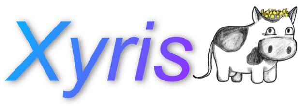

|
Xyris
0.1
|
|
Xyris
0.1
|

Xyris (previously known as Panix) is a small, hobbyist kernel with the goal of becoming a fully-fledged microkernel with an emphasis on usability and security. Having now undergone three rewrites from the ground up, Xyris has come a long way since its first start in 2018.
Xyris is designed to be readable first and foremost. Having been developed at Cedarville University, the primary goal of Xyris is to provide an opportunity for students (and anyone else interested) to learn the intricacies of kernel development. Function names are descriptive and structs are used when possible in order to help increase the legibility of code and provide an "easy-in" for kernel development.
We are constantly looking for people to help contribute to Xyris. If you would like to contribute driver code or a new feature, feel free to fork the repository and submit a pull request. We would love to have you help us make Xyris better! The Getting Started wiki page describes everything necessary to start developing.
Xyris is available under the MIT license. This license may not apply to third party source code used by Xyris. Third party source code used is listed below.
See LICENSE for details.
 1.8.17
1.8.17